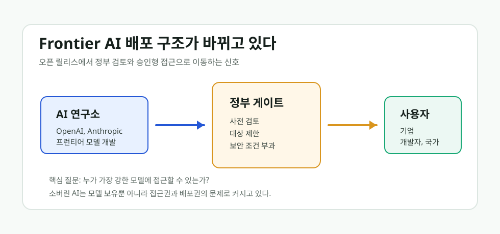

AI 모델도 이제 정부 게이트를 지난다
OpenAI의 GPT-5.6 제한 공개와 Anthropic Mythos 5의 제한 재개는 단순한 모델 출시 뉴스가 아니다. 프런티어 AI가 누구에게, 어느 나라에, 어떤 조건으로 열리는지가 산업 경쟁의 핵심 변수가 되기 시작했다.

핵심 요약
프런티어 모델은 점점 “제품”이 아니라 “통제 대상 인프라”처럼 취급되고 있다
2026년 6월 26일 전후 보도에 따르면 OpenAI는 GPT-5.6을 전면 공개하지 않고 제한된 파트너에게 먼저 열었다. 비슷한 시점에 Anthropic의 Mythos 5도 미국 내 승인된 조직 중심으로 제한적 접근이 다시 허용됐다. 두 사건은 같은 방향을 가리킨다. 가장 강한 AI 모델의 배포는 앞으로 시장 출시 일정만으로 결정되지 않을 가능성이 커졌다.
무슨 일이 있었나
Axios, Business Insider, The Verge, Guardian 보도를 종합하면 OpenAI의 GPT-5.6 공개는 일반적인 “신제품 출시”와 달랐다. Sol, Terra, Luna로 구분되는 새 모델군이 소개됐지만, 접근은 제한된 조직과 파트너 중심으로 시작됐다. 이유는 미국 정부의 사전 검토와 보안 우려였다.
Anthropic의 Mythos 5도 비슷한 축에 있다. Wired와 Financial Times 보도는 미국 정부가 Anthropic의 고성능 모델 접근을 일부 조직에 다시 허용했다고 전했다. 여기서 중요한 점은 “허용했다”는 표현이다. 기업이 모델을 만들고, 시장이 쓰는 단순한 구조가 아니라 정부가 접근 범위에 영향을 미치는 구조가 드러난 것이다.
| 사건 | 표면적 내용 | 진짜 의미 |
|---|---|---|
| OpenAI GPT-5.6 제한 공개 | 새 모델군을 제한된 파트너에게 먼저 공개 | 프런티어 모델의 공개 일정과 접근 대상이 정부 검토와 연결됨 |
| Anthropic Mythos 5 제한 재개 | 일부 미국 조직 중심으로 접근 복원 | 고성능 사이버·추론 모델이 국가안보 자산처럼 다뤄짐 |
| 사용자 영향 | 일반 개발자와 해외 기업은 접근이 늦어질 수 있음 | AI 격차가 모델 성능 격차에서 접근권 격차로 이동 |
소버린 AI의 의미가 바뀐다
지금까지 소버린 AI는 주로 “우리나라가 자체 모델을 보유해야 한다”는 뜻으로 쓰였다. 하지만 이번 뉴스가 보여주는 소버린 AI의 핵심은 더 차갑다. 모델을 갖고 있느냐보다, 모델에 접근할 권한을 누가 승인하느냐가 더 중요해질 수 있다.
한 나라의 기업이 세계 최고 모델을 쓰고 싶어도, 해당 모델이 특정 국가, 특정 기관, 특정 보안 조건 아래에서만 열리면 실제 경쟁력은 접근권에 의해 갈린다. 이때 AI 주권은 모델 국산화만이 아니라 데이터, 컴퓨트, 배포 승인, 보안 평가, 국제 동맹 구조까지 포함하는 문제로 확장된다.
냉정한 경고
이 흐름은 “AI가 폐쇄적으로 변한다”는 단순한 불만으로 끝낼 일이 아니다. 프런티어 AI가 사이버보안, 생물학, 군사, 국가 인프라와 연결될수록 정부 개입은 더 강해질 가능성이 높다. 문제는 그 과정에서 투명한 기준이 없으면 혁신의 속도와 접근의 공정성이 동시에 흔들린다는 점이다.
한국 입장에서는 더 현실적이다. 최고 모델을 API로 빌려 쓰는 전략만으로는 충분하지 않을 수 있다. 어느 순간 가장 중요한 모델은 가격 문제가 아니라 접근 허가의 문제가 될 수 있다. 그래서 소버린 AI는 구호가 아니라 산업 보험에 가까워지고 있다.
출처와 확인 링크
- Axios: OpenAI releases powerful new GPT-5.6 model under restrictions
- Business Insider: OpenAI says access to GPT-5.6 is limited at the US government's request
- The Verge: OpenAI unveils GPT-5.6 amid US AI regulatory drama
- The Guardian: OpenAI staggers AI model release after Trump administration request
- Wired: Trump Administration Allows Anthropic to Release Mythos to Select US Organizations
Comments
댓글